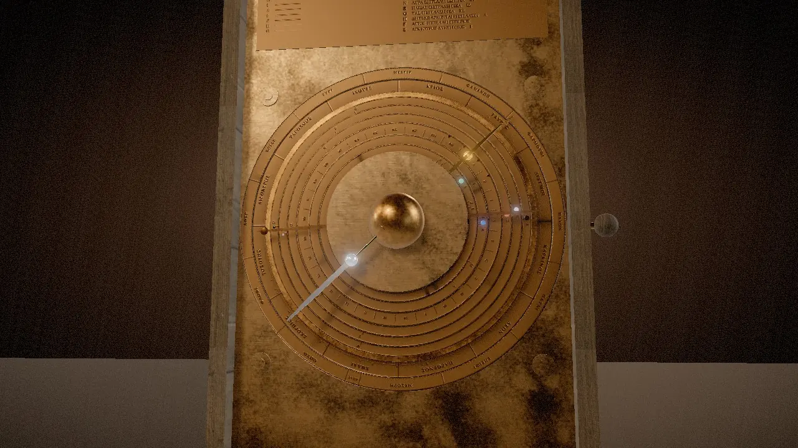
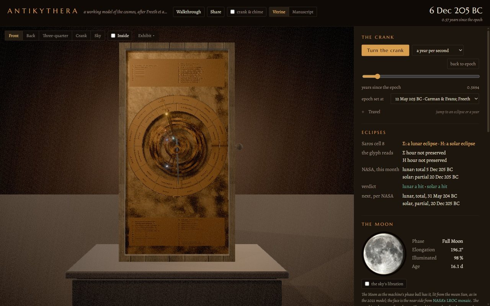
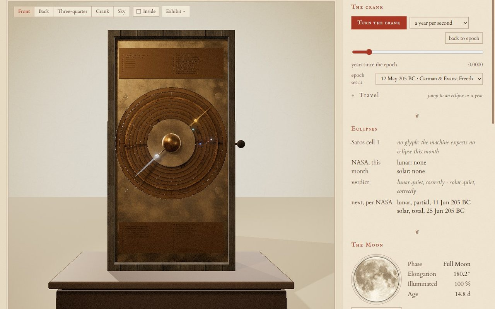

Finished: version 1, on view now
Antikythera Cosmos
The oldest geared computer we know of, rebuilt from its tooth counts. Sixty-nine bronze wheels, after the 2021 reconstruction by Tony Freeth's team at UCL, turned by one crank in your browser and held against the real sky.
What came out of the sea
In 1901 sponge divers working a Roman-era wreck off the island of Antikythera brought up a lump of corroded bronze. It lay unregarded until May 1902, when Spyridon Stais, cousin of the museum's director Valerios Stais, noticed a gearwheel in it. The ship had gone down around 70 to 60 BC.
What survives is 82 fragments, about a third of the machine, in the National Archaeological Museum in Athens. Thirty gears are still in them: 27 in Fragment A and one each in B, C and D.
Reading through the corrosion
In 2005 an X-ray scanner was shipped to Athens and the fragments were scanned slice by slice. Inside the crust were the gears, their teeth countable where the rims survive, and thousands of letters of Greek, many read for the first time since antiquity.
From those counts, and from the numbers inscribed on the front cover, Freeth and his colleagues worked out the rest. Thirty-nine of the 69 wheels here are their proposals, not readings, and the exhibit marks which is which.
Exact in the teeth
Every gear is cut from one table of tooth counts, meshes and couplings, and every rate is an exact fraction, checked by tests against the 2021 paper. The Moon's pointer runs through 64 on 38, 48 on 24 and 127 on 32, which multiply out to exactly 254/19: in nineteen years the Moon goes round the zodiac 254 times.
| Planet | Synodic cycles | in years | Where the numbers come from |
|---|---|---|---|
| Mercury | 1,513 | 480 | derived by Freeth et al. |
| Venus | 289 | 462 | 462 is read on the front cover |
| Mars | 133 | 284 | derived |
| Jupiter | 315 | 344 | derived |
| Saturn | 427 | 442 | 442 is read on the front cover |
The pin and slot
The Moon does not move at an even pace: it hurries near perigee and lags near apogee. At the back of the machine, two 50-tooth wheels sit face to face on axes 1.1 mm apart, a pin on one riding in a slot on the other. As they turn, the slotted wheel speeds up and slows down by about six and a half degrees.
The pair rides on a platform that turns once in about nine years, so the swing follows the slowly turning line of the Moon's orbit.
Calendars and eclipses
The upper spiral counts the 235 months of the Metonic cycle, after which the Moon's phases fall on the same days of the year: nineteen years. Small dials inside it keep the four-year round of the games and the 76-year Callippic cycle.
The lower spiral is the Saros, 223 months after which eclipses repeat. Fifty-one of its cells carry glyphs, Σ for an eclipse of the Moon and Η for one of the Sun, with the hour: 38 lunar and 28 solar, some cells holding both. The little Exeligmos dial adds 0, 8 or 16 hours, because a Saros runs a third of a day past a whole number.
One crank, one year
A hand crank on the side turns a 48-tooth crown wheel against the 223-tooth main wheel. One turn of the main wheel is one year, and every other pointer is geared off it. Here the front dial runs through the year from 12 May 205 BC, the full moon of the eclipse dial's first month, and stops at each month whose Saros cell carries an eclipse glyph, so the glyph can be held against NASA's canon.
The gold hand with the golden ball is the Sun; the silver hand is the Moon, with its half-dark phase ball riding on it; the small stones on the inner rings are the five planets. Drag the crank below to turn it yourself.

12 May 205 BC
0.00 turns of the main wheel
Saros cell 1 on the back
Checked against the sky
The exhibit keeps a second column beside the machine: where the real Sun, Moon and planets stood that day, from a modern ephemeris, and which eclipses really happened, from NASA's Five Millennium Canon. When the bronze is wrong, it says so.
- 28 of 28
- solar glyphs in one Saros from the epoch fall in a month with a solar eclipse somewhere on Earth
- 27 of 38
- lunar glyphs land on a real lunar eclipse; 10 more on one that only grazes the Earth's outer shadow, and one on none
- 3.5°
- the Moon stays within about this of the sky near the epoch, then drifts about a degree every eighteen years
Every comparison with the paper is written up: the first accuracy pass and the second, which found and fixed a Moon pointer running up to 20° off and a broken second epoch.
Where this copy departs from the 2021 paper
Every tooth count, gear train, pin-and-slot offset and pin distance follows Freeth et al. 2021 (Fig. 3 and Supplementary Tables S8 and S9). These parts are this copy's own choices:
- The marks on the front rings. The front display follows the paper's Fig. 7: seven rings of equal width, the true Sun's carrying an Age of the Moon scale and eclipse-limit marks, each planet's carrying scale marks for its synodic events and its index letters, and a smaller marker for opposition on Mars, Jupiter and Saturn. This copy places the marks by working out where each event falls from the planet's own gearing, sets the eclipse limits at 12° and 18° of its own choosing, and runs the 24 letters through one alphabet in an order it chose, not yet checked against the paper's Fig. 8.
- The size of the Sun's anomaly. The paper gives the true Sun's gearing (56, 52, 56 and a follower) but not its dimensions. This copy sets the pin for an eccentricity of 1/24, the ancient value that Ptolemy gives from Hipparchus.
- How the pointers are set. The paper says each anomaly device was set against observations on chosen dates. This copy sets each pin's starting phase, and each pointer's zero at the epoch, by fitting a modern ephemeris (astronomy-engine), which no ancient maker could have done. The 2021 paper does not choose an epoch; the two offered here come from Carman and Evans and Freeth (both 2014) and from Voulgaris and colleagues (2023).
- Geometry, not ratios. The reconstructed wheels are cut at a module of 0.5 where the paper adjusts a few (about 0.53 and 0.54 for the 51 and 44 of the Venus train, 0.521 for its 34 and 26); arbor angles and layer depths are this copy's own; and two surviving lunar wheels, e6 and k2, are cut at a module of 0.534 rather than the measured 0.536 and 0.541 so the train closes on its axis. None of this changes a tooth count or a rate.
Two editions of one exhibit


Both carry every feature: a fourteen-step narrated walkthrough, the gear trains one at a time, the Fragment A scan, two proposed epochs, and a share link for any date you crank to.
How it was made
One gear table
Every tooth count, mesh, coupling and pin offset from the 2021 paper and its supplementary tables goes into a single file. Nothing else defines a gear.
Exact arithmetic
A Python solver turns the table into rates as exact fractions and lays out the arbors; tests hold each planet's period relation to the paper.
Built in Blender
Blender 5.1 cuts every wheel, plate and pointer from the table by script, with dial faces drawn to the millimetre, and exports the machine as glTF.
Driven in the browser
three.js re-derives every rate from rules carried in the model, so the browser turns the machine with the same arithmetic. Time runs as Julian Day on the proleptic Julian calendar, never a JavaScript date.
Checked twice
Two accuracy passes against the paper, the second refereed by a second AI model whose every finding was verified against the sources before anything changed. The narrated walkthrough was then filmed and critiqued, and its staging fixed where the picture missed what the voice described.
Designed and directed by Stewart Gregerson. Built with Claude Code. Narration in a synthetic ElevenLabs library voice.
Sources and credits
- Freeth, Higgon, Dacanalis, MacDonald, Georgakopoulou and Wojcik, A Model of the Cosmos in the ancient Greek Antikythera Mechanism, Scientific Reports 11:5821 (2021), CC BY 4.0. The reconstruction this exhibit follows, with the Antikythera Mechanism Research Project's papers of 2006 and 2008.
- Freeth, Eclipse Prediction on the Ancient Greek Astronomical Calculating Machine Known as the Antikythera Mechanism, PLOS ONE 9 (2014): the eclipse glyphs and the epoch. Carman and Evans, Archive for History of Exact Sciences 68 (2014): the epoch of 12 May 205 BC. Voulgaris, Mouratidis and Vossinakis, Almagest 14.1 (2023): 22 December 178 BC.
- Bitsakis and Jones, The Front Dial and Parapegma Inscriptions, Almagest 7.1 (2016), CC BY-NC 4.0. Iversen, Hesperia 86 (2017): the games and the calendar.
- Budiselic et al. 2020 and Woan and Bayley 2024: the calendar ring's holes. Edmunds, Journal for the History of Astronomy 42 (2011), and Szigety and Arenas 2025 (a preprint): the teeth and their errors.
- Eclipse Predictions by Fred Espenak and Jean Meeus (NASA's GSFC), the Five Millennium Canon. Positions from astronomy-engine by Don Cross, MIT.
| What | Who | Licence |
|---|---|---|
| Reconstruction model | Freeth et al., Sci. Rep. 11:5821 (2021) | CC BY 4.0 |
| Fragment A CT scan | Ashkan Pakzad | CC BY 4.0 |
| Parapegma and front dial inscriptions | Bitsakis and Jones (2016) | CC BY-NC 4.0 |
| Moon face | NASA CGI Moon Kit (LROC) | Public domain |
| Ephemeris (astronomy-engine) | Don Cross | MIT |
| Rooms (studio_small_09, artist_workshop) | Poly Haven | CC0 |
| Layout reference | Thomas Weibel | CC BY |
| Narration voice, David (Documentary) | ElevenLabs library | ElevenLabs terms |
The machine only knows turns. Give it some.